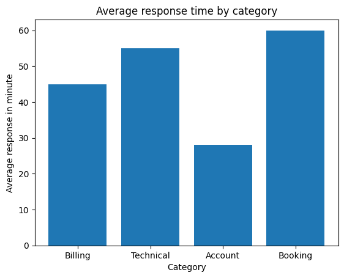
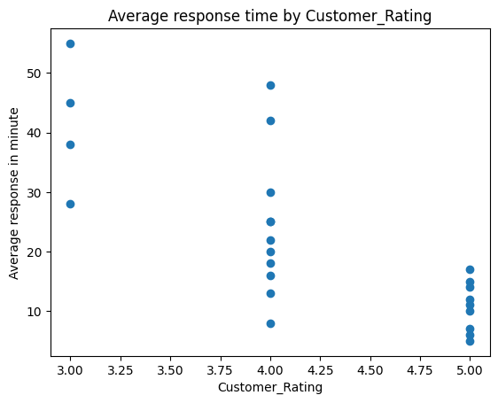

Project Overview
This project analyzes a fictional dataset of 30 customer enquiries to explore response times, enquiry categories, resolution outcomes, and customer ratings. The goal is to identify service bottlenecks and suggest practical improvements.
Tools: Python, Pandas, Matplotlib and Google Colab.
Data note: The dataset is fictional and used for portfolio demonstration only.
Key Findings
30Enquiries analyzed
24.17 minAverage response time
80%Resolution rate
4.21/5Average rating for resolved cases
- Chat was fastest: average response time of 10.6 minutes.
- Email was slowest: average response time of 40.3 minutes.
- Booking enquiries: had the longest average initial response time at approximately 30.3 minutes.
- Technical enquiries: had the longest average resolution time at 1.75 hours.
- Longer response times tended to be associated with lower customer ratings. This is an association, not proof of causation.
Visualizations
1. Average Response Time by Channel
Email enquiries took longer to receive an initial response than chat or phone enquiries.

2. Average Response Time by Category
Booking enquiries had the longest average initial response time among the categories analyzed.

3. Response Time vs Customer Rating
The chart explores the relationship between the time taken to respond and the rating provided by customers.

Recommendations
- Review email workflows and response-time targets.
- Improve booking enquiry routing and prioritization.
- Provide technical support staff with troubleshooting guides and clear escalation procedures.
- Monitor pending enquiries, response times and customer feedback regularly.